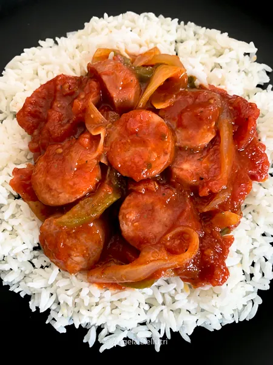

Polska Kielbasa with Tomato and Onion

Description
Hearty Sausage dish with tomato and onion
Pairs well with a side of rice
Ingredients
- Polska Kielbasa - sliced
- 3 Roma Tomatoes - inch diced
- Small brown onion or half large yellow onion - Sliced
- Lawry's Seasoning Salt
- Black Pepper
- Vegetable Oil
- Garlic - minced
Steps
- Brown sausage on a well oiled medium sized skillet on medium-high heat
- Remove sausage from skillet and place it into a bowl
- Add sliced onion
- Add 2 teaspoons of black pepper and seasoning salt
- Once onion is almost golden, open a small area in the center of the pan and add oil
- Add minced garlic to the center of the pan until golden brown
- Add tomatoes and mix, cook until tomatoes are soft
- Add sausage back to the dish
- Heat for 3 minutes and turn off the heat
- Let skillet rest for 3 minutes and add to rice on a plate